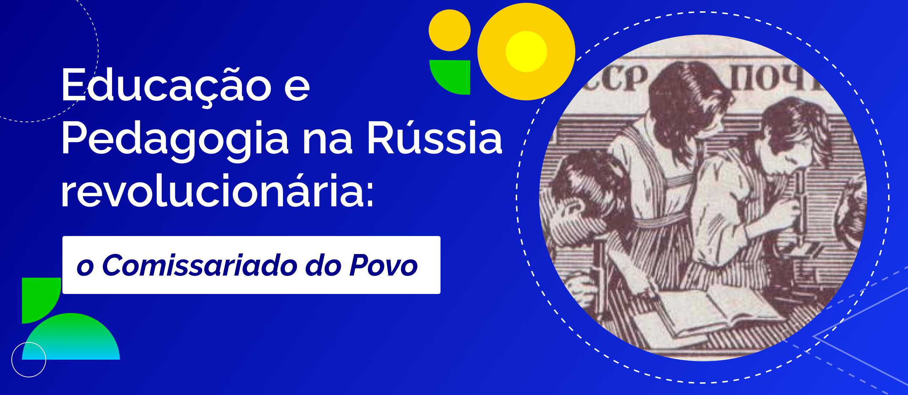

A politecnia como alternativa
No Brasil, há uma tradição de estudos e práticas que analisaram criticamente a unidade contraditória da escola capitalista. Essa tradição fundamentou o que seria uma escola de transição, ou seja, uma proposta educativa que aponta para uma nova realidade ao mesmo tempo em que toma consciência dos valores estruturais capitalistas e de seu modo de operação. É certo que tal nova realidade não partiria de dentro da própria escola capitalista, mas tensionaria a divisão entre trabalho manual e trabalho intelectual, colocando-a no centro das reivindicações dos trabalhadores e vinculando seus objetivos às lutas populares. Essa é, em síntese, a ideia de
As três dimensões básicas da educação politécnica que destacam seu caráter alternativo são:
1) compreensão dos fundamentos científicos de organização e prática do trabalho produtivo;
2) estruturação de um sistema global de estudo e desenvolvimento da tecnologia;
3) compreensão crítica das relações entre sociedade, economia e política fundamentada na ideia de coletividade.
Observe que tais elementos questionam a própria correspondência entre o sistema educacional capitalista e a divisão entre trabalho manual e trabalho intelectual. Alternativamente (e usando a politecnia como bússola) destacam-se a compreensão profundamente científica da produção moderna, o vínculo da educação com um projeto de desenvolvimento tecnológico voltado à resolução dos problemas mais imediatos das amplas massas populares e a visão crítica das hierarquias e contradições capitalistas.
O que a educação politécnica busca fazer é democratizar radicalmente a instituição escolar, ainda que não nutra esperanças em transformar toda a sociedade a partir da própria escola. Em suma, ela contribui para a construção das bases de uma transição democrática e popular para uma nova realidade, com novos valores estruturais e institucionais e, consequentemente, novos aparelhos.
Para isso, a aparente fragmentação (unidade contraditória) é substituída por uma perspectiva articulada da organização dos sistemas educacionais. Entra em cena a ideia de formação humana integral. As três dimensões que destacamos acima ajudam a entender melhor o sentido da ideia de integração nessa concepção, visto que seus pilares são as ideias de trabalho, ciência e cultura, constituídas historicamente na conformação do modo de produção. A integração entre esses três elementos é assumida, então, como base das propostas político-pedagógicas politécnicas.
Para refletir: politecnia e formação integral
Neste ponto da discussão, um alerta é necessário: a formação integral relativa à proposta politécnica não se refere simplesmente à construção de personalidades humanas, assim como os seus objetivos não dependem apenas de esforços individuais. A rigor, a politecnia é um conceito direcionado à transformação política da sociedade a partir de sua compreensão crítica e coletiva, e não um mero modelo baseado em aspectos psicológicos e cognitivos.
A seguir, recomendamos a visualização da aula “Educação e Pedagogia na Rússia revolucionária: o Comissariado do Povo” proferida pela professora doutora Nereide Saviani (2020).

Título: Educação e Pedagogia na Rússia revolucionária: o Comissariado do Povo
Fonte: Saviani (2020); USSR Post (2014).
Elaboração: Prosa (2025d).
Do ponto de vista epistemológico, a integração é fundamentada na perspectiva da totalidade, segundo a qual o conhecimento científico é produzido em um conjunto articulado de determinações históricas e sociais. Nessa abordagem, a realidade não é vista como uma soma de partes, mas como uma combinação de elementos dinâmicos cujos vínculos dependem de sua constituição material.
Conforme as circunstâncias dessa materialidade (níveis, locais, territórios, grupos e classes sociais), surgem contradições que podem gerar novas situações históricas. O limite desse processo é o que chama de 'unidade de ruptura', que produz novos conhecimentos ou, do ponto de vista social, novos modos de produção. Eis, portanto, os dois princípios básicos da formação humana integral: um, político-social, que é a politecnia; outro, epistemológico, que é a totalidade.
E o que a gestão da escola tem a ver com isso?
Até aqui, identificamos duas grandes possibilidades de pensar a escola e a formação profissional. A primeira se orienta pelos valores estruturais e está centrada na reprodução ampliada da força de trabalho. Essa concepção ou conforma o senso comum (Saviani, 2013 [1983]), ou se restringe à superficialidade dos aspectos institucionais da educação (Saes, 2013). A segunda possibilidade, fundada no conceito de politecnia, permite a compreensão crítica acerca do funcionamento da escola capitalista e apresenta proposta de transição para uma nova realidade. Vejamos, agora, em uma visão ainda panorâmica que será aprofundada no próximo capítulo, como essas perspectivas derivam visões e terminologias distintas sobre a gestão escolar.